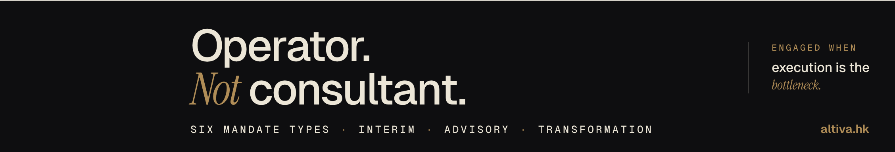
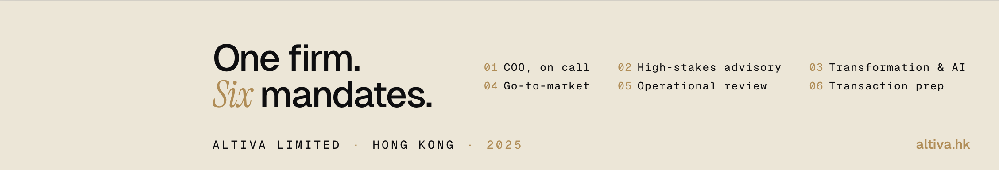

Mid-market funds active in EU and APAC. High-density buyers of operator-led engagements.
03COOs, CTOs and GMs reporting to those CEOsInfluencer
Often surface the need internally before the CEO moves. Worth the read.
04CFOs preparing a transactionTrigger
Fundraise, exit, repositioning. Enter late but convert quickly.
05Board members and non-execsReferrer
Recommend the engagement rather than buy it. Repost amplifiers when content lands.
Secondary, not targeted directly: investment bankers, executive search partners, growth-stage VCs. They will follow if the voice is right; we do not write for them.
§ 01.BGoalsmeasurable · 90 days
KPI
Baseline (Day 1)
Target (Day 90)
Company Page followers
3
500+
Inbound DMs from qualified buyers
0
8–12
Meeting-ready conversations
0
3
Pieces of content published
1
25
§ 01.CVoice guardrailswhat not to write
Register
The Economist / Monocle, not Justin Welsh. Editorial, restrained, confident.
No em-dash spam
No — past the first one per post. Em-dash overuse is the loudest AI tell on LinkedIn in 2026.
No growth-hack emoji
No 👉🎯🚀. They clash with the brand and signal "template."
No broetry
No one-sentence-per-line cascades. Trained-on-LinkedIn pattern, same AI family as the em-dash.
Concrete over abstract
Specific numbers. Named sectors. Anonymized clients. If you cannot anchor it in something real, do not post it.
Lead lines stop scroll
LinkedIn cuts at ...see more around 200 characters. Burn your best line in the first two.
§ 01.DCadencerhythm that compounds
Posts per week
Two. Tuesday & Thursday.
Publish at 09:00 Hong Kong time(= 03:00 CET · 02:00 GMT · 21:00 NY prior day). Catches EU morning commute and APAC late-morning feed.
12 weeks × 2 posts = 24 posts, plus the live launch of April 19 and one long-form article at Week 12. 25 pieces of content total.
§ 01.EDistribution playbookexecuted on every post
01
Publish from Company Page /company/altivaltd.
02
Julien reposts from personal profile within 1–2 hours with a one-line human intro. See §07 for templates.
03
DM 3–5 targeted contacts with the post link and one sentence explaining why this one is relevant to them specifically. Never mass-blast.
04
Reply to every comment within 4 hours for the first 24 hours. LinkedIn weighs owner replies heavily in its distribution algorithm.
05
Invite 20–30 new connections to follow the page each week via the admin tool. Free, capped at roughly 250 per month. Target CEOs, COOs, PE partners from Julien's 1st-degree network first.
§ 02Content pillarsfive lanes, fixed ratios
Five pillars.
Every post sits in exactly one pillar. The ratios fix the mix — without them, the calendar drifts into whichever subject feels easiest to write that week.
P1
Operator vs Consultant
Reinforce the core positioning. Sharp, anti-consultant takes. What operators do that decks do not.
25%6 posts
P2
The six mandates
Each mandate gets one to two dedicated posts. Concrete example of what the work actually looks like.
25%6 posts
P3
Field notes
Anonymized observations from current or recent engagements. Pattern recognition. "What I saw this month."
25%6 posts
P4
EU ↔ APAC
The geographic thesis. Why the bridge matters. What does not translate. Specific market deltas.
15%4 posts
P5
Industry takes
Sharp opinions on news — a deal, earnings call, CEO departure. Always laddered back to the operator thesis.
10%3 posts
§ 03Monthly arcsthree movements
Three months, three arcs.
The 90 days are not a flat pulse of content. Each month builds on what the last one established, and narrows toward the long-form piece at Week 12.
§ M1
Foundation
Weeks 1 — 4
Who we are. Why Altiva exists. Why now. Establish voice and positioning. Heavy on P1 and P4. This month is about earning the right to be read.
§ M2
Method
Weeks 5 — 8
One mandate per week. Deep dives into what each engagement actually looks like. Heavy on P2 and P3. Credibility-building. This month is about proving we mean it.
§ M3
Authority
Weeks 9 — 12
Field perspective, pattern recognition, industry takes. P3 dominant, plus P5 for topicality. Closes with the long-form article at Week 12 — the SEO asset that outlives the quarter.
§ 04CalendarTue & Thu · 12 weeks
Twelve weeks.
The full drumbeat. Highlighted rows are the launch (already live) and the long-form article week. Dates are anchored to Day 1 = 2026-04-19.
Week
Tuesday
Thursday
Pillars
W0 Apr 19
Launch post — Altiva is back online.✓ Published
— rest —
P1
W1 Apr 21 · 23
Most companies don't have a strategy problem
The meeting where I stopped using slides
P1 · P1
W2 Apr 28 · 30
What I look for in the first 30 minutes inside an org
The one question a consultant can't answer
P1 · P1
W3 May 5 · 7
Why Hong Kong anchors EU–APAC advisory in 2026
Three operating patterns that don't translate
P4 · P4
W4 May 12 · 14
Why "interim" doesn't mean "temporary"
What 30 days of listening bought a client's €40M programme
P2 · P3
W5 May 19 · 21
High-stakes advisory: skin in the game, not hours in a deck
Field note: the exec com stuck for six months
P2 · P3
W6 May 26 · 28
Why 80% of AI programmes stall, and what the 20% do differently
"Absorbed, not layered": what AI integration means
P2 · P3
W7 Jun 2 · 4
Building a GTM engine across EU and APAC: five structural choices
Field note: a channel programme that 3× in 9 months
P2 · P3
W8 Jun 9 · 11
The 12-point operational review: what I actually check
When the operational review finds the answer is upstream
P2 · P3
W9 Jun 16 · 18
Equity story vs sales deck: why PE buyers see through most pitches
Field note: a transaction prep that shifted valuation 20%
P2 · P3
W10 Jun 23 · 25
What F500 industrial buyers want in 2026 that they didn't in 2020
Industrial vs services: the operating gap nobody talks about
P5 · P3
W11 Jun 30 · Jul 2
The pattern I see in every CEO mandate
Altiva at 90 days: mandates taken, mandates turned down
P3 · P1
W12 Jul 7 · 9
📄 LONG-FORM ARTICLE The Operator Doctrine — Why execution is the scarce asset of 2026
90-day closing reflection + H2 signal
P1 · P3
Review gates: end of W4 (voice check, adjust hook lines if impressions flat), end of W8 (first paid mandate should be booked from inbound — step up DM outreach if not), W12 (article is the authority moment — push it via Julien's repost + email signature + site link).
§ 05Posts · Weeks 1 — 4ready to publish
Eight posts, ready.
Written in the Altiva voice. Zero em-dashes except where one is genuinely natural. No broetry. Each card has a Copy button — paste straight into the Company Page.
W1 · Tue Apr 21P109:00 HKT
Most companies don't have a strategy problem.
Most companies we work with don't have a strategy problem.
They have an execution problem.
The direction is set, the growth is there, but the organisation
just isn't moving.
It's not a talent issue either. The talent is usually fine.
What's missing is someone who sits inside the P&L, makes
decisions in real time, and stays until the mandate is closed.
That's the space between consulting and executive search. Not a
report, not a permanent hire. An operator on call, embedded
until the work moves.
Altiva is built for that space.
altiva.hk
#InterimCOO #Execution #Operators #APAC #EU

Attach · CP Banner A · 1128 × 191
— / 3000 chars
W1 · Thu Apr 23P109:00 HKT
The meeting where I stopped using slides.
Two years ago, I was briefing a CEO on a transformation
programme. I had 40 slides. He had 20 minutes. I got to slide 6.
He stopped me. "Julien, I don't need the deck. I need to know
if you'll sit in my exec com next Tuesday and make the call on
the procurement freeze."
I said yes. I never used the deck again.
That's the moment the word "consultant" stopped fitting.
Not because consulting is wrong. Because what most CEOs actually
need, at the moment they reach out, is someone who will take
the decision they've been avoiding, with them, in the room.
Slides are for alignment. Decisions are for operators.
#InterimCOO #Advisory #Execution
— / 3000 charsimage · text-only
W2 · Tue Apr 28P109:00 HKT
What I look for in the first 30 minutes inside an org.
The first 30 minutes inside a new mandate tells you 80% of
what you need to know.
Not the P&L, not the strategy deck. The coffee-machine
conversation tells you more.
Who actually talks to whom. Who gets cut off in meetings.
Which decisions loop back three times before getting made.
Which middle manager everyone quietly routes around.
This isn't culture. It's operating friction. And it's almost
always where the execution problem lives.
Five questions I ask in the first week:
1. Which decision has been pending the longest, and why?
2. What does the CEO not know that the director layer does?
3. Where does accountability actually land, on paper vs. in practice?
4. Which meeting, if cancelled, would nobody miss?
5. What would move this week if I weren't here?
Answers to these tell me more than 40 pages of strategy ever will.
altiva.hk
#Operators #COO #Execution #OperationalReview
— / 3000 charsimage · text-only
W2 · Thu Apr 30P109:00 HKT
The one question a consultant can't answer.
"Will you be in the room when it breaks?"
That's the question a consultant can't answer honestly.
Their economics don't allow it.
The deck gets delivered. The bill gets sent. The account team
rotates. When the programme stalls in month four, the consultants
have moved on to the next client.
An operator's economics are different. We succeed when the work
moves, not when the deliverable ships. We're in the room in month
four because the value lives there.
If your current advisor can't say yes to that question without
a caveat, you have the wrong structure.
#Operators #InterimCOO #Advisory
— / 3000 charsimage · text-only
W3 · Tue May 5P409:00 HKT
Why Hong Kong anchors EU–APAC advisory in 2026.
Most EU operators fly into Asia. Most APAC operators fly into
Europe. Very few anchor permanently at the hinge.
Hong Kong, in 2026, is still the hinge. Not because of what it
was 20 years ago, but because of what it structurally is now:
· 4-hour flight to Shanghai, Singapore, Tokyo
· 12-hour flight to London, Paris, Zurich
· Same-day working overlap with both continents
· English-first operating environment
· Financial infrastructure that still clears the deals
· Deep pool of operators who have run cross-border P&Ls
For any mandate that moves between Europe and Asia, which is
most serious industrial, tech, or services mandates above €100M
revenue, the question isn't whether to have someone in the region.
It's whether that someone understands both sides.
Altiva is based in Hong Kong for exactly this reason.
altiva.hk
#APAC #EU #HongKong #InternationalBusiness
Attach · CP Banner C · 1128 × 191
— / 3000 chars
W3 · Thu May 7P409:00 HKT
Three operating patterns that don't translate.
After fifteen years running cross-border P&Ls, three operating
patterns never translate cleanly between Europe and Asia.
1. Speed of decision.
A French industrial takes 6 weeks to approve a mid-six-figure
contract. A Singaporean competitor takes 6 days. Neither is wrong.
But if you run the French playbook in Asia, you lose deals before
they start.
2. Hierarchy of accountability.
In most EU orgs, directors own outcomes and committees approve.
In most APAC orgs, particularly Chinese-speaking, the reverse is
true. The committee owns the call. Individual accountability is
diffused by design. The KPI sheet looks identical. The cultural
machinery underneath doesn't.
3. Compensation and loyalty.
A senior manager in Paris will stay 7 years for a 5% raise and
a better title. The same profile in Singapore or Hong Kong will
move in 18 months for 15% more. Retention economics don't cross.
If your playbook came from one continent and you're deploying it
on the other, expect friction. Budget for it.
#APAC #EU #CrossBorder #Operators
— / 3000 charsimage · text-only
W4 · Tue May 12P2 · Interim COO09:00 HKT
Why "interim" doesn't mean temporary.
Interim doesn't mean temporary. It means sized to a problem.
A good interim COO mandate runs 4 to 9 months. Long enough to
diagnose, decide, move the org, and land the work. Short enough
that scope stays sharp and the hire doesn't drift into middle
management.
What we don't do:
· 2-week fly-in assessments that end in a report
· 24-month placements that become de facto permanent roles
· Supervisory arrangements where the operator watches but
doesn't sign
What we do:
· Clear mandate scope, written on one page
· Real decision rights, signed off by the CEO
· P&L ownership when the work requires it
· A defined closing point the moment the mandate starts
Interim isn't temporary. It's focused.
altiva.hk
#InterimCOO #Operators #Advisory

Attach · CP Banner B · 1128 × 191
— / 3000 chars
W4 · Thu May 14P309:00 HKT
What 30 days of listening bought a €40M programme.
A few years ago, I was brought in to accelerate a stalled €40M
industrial automation programme inside a Fortune 500. 14 months in,
2 quarters behind milestone, morale visibly sliding.
The mandate brief was "unblock execution."
I spent the first 30 days in listening mode. No deck, no
recommendations. One-on-ones with every direct report, every
pillar lead, and the three site managers closest to the work.
By week four the problem wasn't what the PMO thought it was.
The sequencing was wrong. Two workstreams were structurally
blocking each other, and nobody wanted to surface it because it
would mean admitting to the CFO that the original programme plan
was flawed.
We re-sequenced. Rebuilt the dependency map. Had one hard
conversation with the CFO. Programme was back on milestone in
11 weeks.
The lesson isn't new but it's worth repeating. Most execution
problems aren't solved by adding people or tools. They're solved
by someone willing to hear what the organisation already knows,
and act on it.
#InterimCOO #Transformation #Execution #Industrials
— / 3000 charsimage · text-only
§ 05.BPersonal posts · Mon May 11 → Wed Jun 3after Japan · 8 posts
Eight personal posts.
From Julien's personal profile, Mondays and Wednesdays at 09:00 HKT (so the perso feed never duplicates the Company Page Tuesday/Thursday rhythm). Same Altiva universe, but written first-person and observational. Cadence intentionally delayed until Mon May 11 — after Julien's Japan break Fri May 2 → Fri May 8 — to start the perso broadcast with fresh bandwidth and a softer ramp after the Company Page has already had three weeks to breathe. Critical constraint observed throughout: none of these posts mention "Altiva" by name in the body. Altiva surfaces only via Julien's profile (banner, headline, bio). Anyone curious clicks through. This keeps current client relationships clean while still building Julien's personal authority, which is, in reality, the actual reach engine.
PERSONAL · Mon May 11First-person09:00 HKT
The CEO question I never forgot.
Three years ago I was running a transformation for a Fortune 500
industrial. Six months in, the CEO asked me a question I never
forgot: "How do we keep this momentum when you leave?"
The honest answer was: you don't, unless someone else takes the
seat I'm sitting in.
That conversation has stayed with me through every mandate since.
Most senior advisory work ends when the deck does. The actual
problem usually starts in month four, when the deck-makers have
moved on.
The work that holds is the work where someone takes the seat,
makes the calls, and stays until the mandate is closed.
— / 3000 charsno image · text post
PERSONAL · Wed May 13Boardroom vignette09:00 HKT
The meeting that should have happened three months earlier.
Sat in a board meeting last week where the CEO presented a
strategic refresh. Twenty-eight slides. All directionally right.
None of it was the actual problem.
The actual problem was a four-month-old hire decision the CEO
hadn't made, because two board members would push back.
Nobody named it. The slides covered for it. Everyone left aligned
on a refresh that didn't touch what was stopping the company.
Most strategy meetings are about avoiding the meeting that should
have happened three months earlier.
— / 3000 charsno image · text post
PERSONAL · Mon May 18Sharp take09:00 HKT
"Looking for fractional advisory" usually means something else.
Half the senior managers I meet who say they're "looking for
fractional advisory" actually need someone who'll take the
operational decision they've been avoiding for two quarters.
Not someone to think with them. Someone to act with them.
The market has plenty of the first kind. Almost none of the second.
— / 3000 charsno image · text post
PERSONAL · Wed May 20Field observation09:00 HKT
What PE operating partners in Asia keep asking me.
Talking to PE operating partners in Asia this month. Same pattern
in three different conversations.
Their portfolio companies are not short on strategy. They're short
on someone who can sit in a Singaporean exec com and a Munich
executive committee in the same week, hold both contexts, and not
default to one playbook.
That's not consulting. That's the job.
There's a real shortage of people who can do it.
— / 3000 charsno image · text post
PERSONAL · Mon May 25APAC observation09:00 HKT
APAC isn't a market. It's six markets.
After fifteen years between Europe and Asia, the one mistake I
see European executives make most often is treating APAC as a
market.
It's six markets. Sometimes ten. The strategy that works in
Singapore breaks in Tokyo, and the playbook from Tokyo doesn't
move in Vietnam.
If your APAC plan reads "expand into Asia" with one set of
assumptions, you don't have an APAC plan. You have a Singapore
plan with hope attached.
— / 3000 charsno image · text post
PERSONAL · Wed May 27Personal lesson09:00 HKT
The answer is almost always already in the building.
The single most useful thing I learned in fifteen years inside
P&Ls: the answer is almost always already in the building.
The CEO suspects it. Two layers down, someone knows it cold.
The middle layer protects against it surfacing.
My job is rarely to bring new insight. It's to give people
permission to surface what they already see, then make sure the
decision actually gets taken.
Consultants bring frameworks. Operators bring oxygen.
— / 3000 charsno image · text post
PERSONAL · Mon Jun 1CEO vignette09:00 HKT
"What's the first thing you'd change?"
A CEO asked me last month: "If you sat in my chair tomorrow,
what's the first thing you'd change?"
I said: cancel three of your standing meetings, write the answer
to the procurement question your CFO has been ducking, and have
the conversation with your COO that you've been postponing since
Christmas.
He cancelled the meetings that afternoon. The rest is harder.
We're working on it.
Most senior leaders don't need a strategy reset. They need
someone who'll name what they're avoiding.
— / 3000 charsno image · text post
PERSONAL · Wed Jun 3Operator reflection09:00 HKT
The minute it gets comfortable, you've drifted.
Most operators stop being useful the moment they stop being
uncomfortable.
The minute the meetings get easy, the calendar fills with reports,
and you stop being asked the hard questions, you've drifted from
operating into managing.
The job is to keep being the one who says the thing nobody else
in the room is willing to say.
— / 3000 charsno image · text post
§ 06Briefs · Weeks 5 — 12expand closer to publish
What comes next.
14 briefs. Each sets hook and core argument; full copy gets drafted one week before publish, so real client cases and fresh industry events can land in the post naturally. Click a row to expand.
W5 · TueHigh-stakes advisory: skin in the game, not hours in a deckP2 · Advisory
Frame: what distinguishes a real advisory engagement from a paid opinion. Concrete: fee structure aligned to outcome, not hours. The one-page letter of engagement. Specific: when we decline advisory (pure opinion-gathering, no decision pending). Counter-intuitive beat: sometimes the most valuable advisory is declining the engagement.
→ Draft the week of May 12.
W5 · ThuField note · the exec com that was stuck for six monthsP3
Anonymized. A €300M European services business whose executive committee couldn't land a strategic pivot for six months, because two of the seven members had conflicting incentives nobody had named. How a neutral operator surfaced it in three sessions. Core lesson: most boardroom stalls aren't disagreement on strategy, they're misalignment on personal downside.
→ Draft the week of May 12. Verify anonymization before publish.
W6 · TueWhy 80% of AI programmes stall — and what the 20% do differentlyP2 · Transformation
Thesis: AI programmes stall when they're layered on top of the operating model instead of absorbed into it. The 20% that work treat AI adoption as an operational question, not a technology question. Three concrete markers: who owns the P&L impact, where it shows up in the operating review, whether middle management has incentive to use it.
→ Draft the week of May 19.
W6 · Thu"Absorbed, not layered": what AI integration actually meansP3 · P2
Follow-up to Tuesday's post. A named pattern from one mandate: a sales enablement AI tool that was "rolled out" twice in 18 months, both times ignored. The third rollout worked because the AI outputs were hard-wired into the weekly commercial review, not delivered as a dashboard.
→ Draft the week of May 19.
W7 · TueBuilding a GTM engine across EU and APAC: 5 structural choicesP2 · GTM
Framework post. The five binary decisions that determine whether a cross-border GTM works: HQ location of the commercial ops lead, P&L structure (regional vs functional), channel-direct ratio, pricing governance, and partner economics. Each choice gets a "right for EU", "right for APAC", and "costly if wrong" lens.
→ Draft the week of May 26.
W7 · ThuField note · a channel programme that 3× in 9 monthsP3
Anonymized industrial B2B business that had a regional channel programme stuck at 12% of revenue for three years. What shifted: simplified partner tiers, moved partner-facing P&L ownership from marketing to sales ops, introduced a single cross-region partner scorecard. No new budget.
→ Draft the week of May 26. Consistency check with the w4 site mandate (filière électrique).
W8 · TueThe 12-point operational review: what I actually checkP2 · Ops review
List-post. The 12 things I check in the first two weeks of any operational review: decision velocity, escalation paths, meeting load, KPI hygiene, middle management bandwidth, customer-facing availability, pipeline hygiene, cost-to-serve trends, quality/NPS trends, cash cycle, talent retention signals, and technology-debt heat map. Each with one sentence of what "healthy" looks like.
→ Draft the week of Jun 2. Strong candidate for a carousel adaptation.
W8 · ThuWhen the operational review finds the answer is upstreamP3
Counter-intuitive. Half the operational reviews end up prescribing changes at the board or strategy level, not at the operations level. Anonymized example: an industrial distribution business whose "ops problem" was actually a product portfolio problem. Walk through how the review surfaces that, and how we hand off when it does.
→ Draft the week of Jun 2.
W9 · TueEquity story vs sales deck: why PE buyers see through most pitchesP2 · Transaction
PE buyers look at 300+ decks a year. The patterns they reject: feature-focused, growth-without-structure, TAM-without-unit-economics, management team as afterthought. The patterns they reward: equity story as operating narrative, evidence base from real customer cohorts, board dynamic that reads credible. How we prep.
→ Draft the week of Jun 9.
W9 · ThuField note · a transaction prep that shifted valuation 20%P3
Anonymized. A European services business preparing for a growth equity round. Original valuation range indicated by the banker: €80–100M. After nine weeks of equity-story work (re-segmenting the customer book, rebuilding the cohort economics, restructuring the management case), closed at €125M. What specifically changed vs. what looked superficially similar.
→ Draft the week of Jun 9. Most commercially attractive post of the quarter — prepare DM follow-up flow.
W10 · TueWhat F500 industrial buyers want in 2026 that they didn't in 2020P5 · P3
Industry take. From working inside several F500 industrial mandates, the procurement and C-suite expectations that have structurally shifted since 2020: auditable sustainability data, supply chain optionality, AI-native tooling from the first pilot, EU-APAC governance parity, and evidence of in-region operator presence. What this means for anyone selling into them.
→ Draft the week of Jun 16.
W10 · ThuIndustrial vs services · the operating gap nobody talks aboutP3
Observation. A services business P&L has 3–5× more operational levers per €1 of revenue than an industrial one, but industrial management teams still set the reference for operating maturity in most mid-cap boards. Why this mismatch creates friction, and how it shows up in transformation programmes.
→ Draft the week of Jun 16.
W11 · TueThe pattern I see in every CEO mandateP3
Synthesis. After N mandates in 12 months, the one pattern Julien sees repeatedly: the CEO already knows the answer, but can't be the one to surface it because of the political geometry. Altiva's value is rarely insight; it's permission. Thoughtful, slightly vulnerable post.
→ Draft the week of Jun 23.
W11 · ThuAltiva at 90 days · mandates taken, mandates turned downP1 · transparency
Transparency post for the end of Q1 public phase. Specifics (anonymized): N mandates scoped, N signed, N turned down (and why — e.g. outside our six types, political mandate not an execution mandate, too early for interim, etc.). Numbers from the site: followers, DMs, first engagements. What's next.
→ Draft the week of Jun 30. Depends on real Q1 figures.
W12 · Tue📄 LONG-FORM ARTICLE · The Operator Doctrine — Why execution is the scarce asset of 2026P1 · long-form
The deep piece. 1,500–2,500 words. Thesis: in a decade where strategy, capital, and AI are all abundant, the scarce asset is the operator who can turn any of them into motion. Three parts: (1) why strategy-led firms stall, (2) what operator-led firms do structurally differently, (3) what this means for how boards should build their top-team over the next five years. Publishing mechanism: LinkedIn Article (not a post) for SEO. Announce it with a short post pointing to it.
→ Begin drafting the week of Jun 23. Reserve 4 hours editorial time.
What Altiva learned in 90 days of public operation. What changes for H2: mandate mix, geographic focus, hiring if any. Sets expectations for the audience that will now stay with you into Q3.
→ Draft the week of Jul 7, informed by real 90-day metrics.
Same constraint as §05.B: no "Altiva" in the body, observation and first-person only. Drafted closer to publish so live signals from real mandates can shape the copy.
P · W5 MonThe cost of the meeting that didn't happenCounter-intuitive math
Senior operators systematically under-price the cost of decisions delayed by a quarter. A pending pricing call costs roughly 4× a wrong pricing call when you compound the customer-acquisition decisions stalled behind it. Anonymized vignette to anchor.
→ Draft the week of May 12.
P · W5 WedWhy I stopped reading half what I used to readPersonal note
Short, slightly personal. Senior operators need to curate inputs differently than analysts. Three things Julien stopped reading and three he replaced them with. Builds the "this person thinks differently from a generic LinkedIn voice" signal.
→ Draft the week of May 12.
P · W6 MonThe AI vendor pitch I sat through three times last monthPattern observation
Three different vendors, same script, same structural flaw — none of them addressed the operating model question. Sharp, specific, useful for any CEO sitting through similar pitches.
→ Draft the week of May 19.
P · W6 WedWhen "transformation" becomes a synonym for "we don't know what we're doing"Linguistic take
The word started meaning something specific. It now absorbs all confusion. Counter: what real transformation looks like when the term is named precisely. Sharp piece, slightly polemic.
→ Draft the week of May 19.
P · W7 MonThe 30-day delay vs the wrong callDecision economics
Senior operators systematically over-weight the cost of a wrong call vs. the cost of a 30-day delay. The math is usually inverted from intuition. Walks through one concrete example with rough numbers.
→ Draft the week of May 26.
P · W7 WedChannel partners as the leading indicator nobody watchesField signal
Most CEOs read sales pipeline as their primary commercial signal. Channel partner momentum is a 6-month earlier indicator of where the pipeline will be. Why almost no one tracks it. What to look at instead.
→ Draft the week of May 26.
P · W8 MonThe first question good CFOs ask on day three of a mandateCFO signal
A specific question that signals a CFO who actually owns the operating side, not just the reporting side. (The question itself: "Where's our cash trapped this month?") Why the answer always reveals more than expected.
→ Draft the week of Jun 2.
P · W8 WedWhen an operational review surfaces a governance issueAnonymized vignette
The dynamic of bringing it up. How to do it without burning the relationship with the board chair. Specific phrasing that has worked. What you do when it doesn't.
→ Draft the week of Jun 2.
P · W9 MonThe trait every founder who got a high valuation had in commonPattern across deals
Across multiple transaction preps, one trait shows up consistently: not pitch quality, not growth rate, not even storytelling. The willingness to acknowledge a real risk in their own deck before the buyer asks. Counter-intuitive piece.
→ Draft the week of Jun 9.
P · W9 WedWatching a portfolio company miss its sale windowHard observation
Sad, but useful. The warning signs are usually 18 months earlier. Three signals nobody escalates because acting on them means having the hard board conversation everyone is postponing.
→ Draft the week of Jun 9.
P · W10 MonF500 industrial procurement in 2026 vs 2020Sector shift
Direct first-person observation from inside several mandates. Five things that have structurally shifted: auditable sustainability data, supply-chain optionality, AI-native tooling from day one, EU-APAC governance parity, in-region operator presence.
→ Draft the week of Jun 16.
P · W10 WedIndustrial vs services management styles, observed directlyCross-sector
Industrial managers run by milestone. Services managers run by week. The translation problem when the same person manages both kinds of P&L. Why most CEOs underestimate how different the two operating cadences are.
→ Draft the week of Jun 16.
P · W11 MonWhat I'm hearing now in CEO conversations that I wasn't 90 days agoLive pattern
Short pattern note from recent conversations. Theme to test: shift from "growth at any cost" to "growth that survives the next downturn." Tactical implications.
→ Draft the week of Jun 23.
P · W11 WedWhat I'd change about my opening positioningVulnerable / honest
90-day reflection. What I'd phrase differently with the benefit of three months of feedback. Slightly vulnerable, builds trust. Performs unusually well on LinkedIn when it's actually honest, not performed humility.
→ Draft the week of Jun 23.
P · W12 Mon📄 Pinning the long-form piece — personal prefaceArticle companion
Personal preface to the Operator Doctrine article. Frame: "I've been writing this for two months. Here's the one paragraph that took the longest. Full piece in the comments." Drives readers from feed to the long-form on the Company Page.
→ Draft the week of Jun 30. Companion to the §06 W12 article.
P · W12 WedHalf-year reflection · what's working, what isn'tClosing reflection
End-of-quarter honesty. Three things working, two things not, what changes for H2. Sets up the next 90 days of content without explicitly saying so.
→ Draft the week of Jul 7, informed by real Q2 metrics.
§ 07Julien repostsone line, human, by pillar
Julien reposts, by pillar.
Every Company Page post gets reposted from Julien's personal profile one to two hours later, with a human one-liner. Templates below — adapt, never paste verbatim.
P1 Operator vs Consultant
"Something I've been trying to put words on since I started Altiva."
P2 Mandates
"What an interim COO (or advisory, or transformation) mandate actually looks like, written out."
P3 Field notes
"Something from a recent mandate that stuck with me. Anonymized, but the lesson isn't."
P4 EU ↔ APAC
"For anyone running a business across both continents, this one."
P5 Industry takes
"Reading the news on [X deal / X earnings / X piece], here's what I'd add from inside the P&L."
§ 07.BPre-mapped intros · W1 — W4one per scheduled post
Each of the eight Company Page posts scheduled in §04 has a specific one-liner here — tuned to the individual post's content so the intro feels intentional rather than templated. Paste straight, or modify live if you have time (live always beats template). Click Copy on each row.
Fires
Post
Repost intro — paste as your comment
Tue · Apr 21
p1 · Most companies don't have a strategy problem
Something I keep coming back to every time I meet a senior leader.
Thu · Apr 23
p2 · The meeting where I stopped using slides
A moment a couple of years ago that changed how I approach every mandate since.
Tue · Apr 28
p3 · First 30 minutes inside an org
The five questions I actually ask in the first week inside any new mandate.
Thu · Apr 30
p4 · The one question a consultant can't answer
A question more CEOs should put to the people they bring in.
Tue · May 5
p5 · Hong Kong anchors EU–APAC advisory
For anyone running a business between Europe and Asia, why the hinge still sits where it does.
Thu · May 7
p6 · Three operating patterns that don't translate
Fifteen years between the two continents have taught me three things that never translate cleanly.
Tue · May 12
p7 · Why "interim" doesn't mean "temporary"
What a good interim mandate actually looks like when the shape is right.
Thu · May 14
p8 · 30 days of listening bought a €40M programme
A lesson I keep referring back to when something stuck won't move.
Hard rule: Julien's repost intro should be written the morning of, not pre-scheduled. Reposts that feel live get 3–5× the engagement of ones that feel templated. The intros above are a safety net for mornings without improvisation bandwidth — zero guilt about using them straight.
§ 08Measurement5 minutes every Monday
Measure, every Monday.
Six numbers to check each Monday morning. Not a dashboard that needs admin love — a five-minute scan that tells you whether the plan is working, and what to change if it isn't.
Metric
Source
Target trajectory
Company Page followersLinkedIn Admin
Admin view
+30 to +50 per week baseline
Post impressions (7-day avg)Post analytics
Post analytics
Rising 10%+ per week in Month 1
Post engagement ratePost analytics
Post analytics
>3% = healthy · >5% = strong
DMs from qualified buyersInbox
Inbox
1–2 per week by end of Month 1
Julien personal repost engagementPersonal feed
Personal feed analytics
Should 3–5× the page post baseline
Site referrals from LinkedInGA / Plausible
GA / Plausible
Rising per-post
If · impressions flatRewrite the first two lines, keep the content underneath. Hook lines aren't landing.
If · high engagement, no DMsAdd softer CTAs. One post in five can say "if this sounds like your last quarter, DM me."
If · DMs from wrong ICPNarrow hashtags to 3–4 tight tags (#InterimCOO #APAC #EU) and drop the broad ones.
If · a post 10× the usual engagementRebuild next month around its format. LinkedIn is signal-driven — follow it.
§ 09Editorial ruleone page, every week
The editorial rule.
Pinned above the desk. If in doubt about whether a draft is ready to ship, read this and rewrite.
The register, stated plainly
Altiva is The Economist, not a LinkedIn influencer.
Do
Concrete numbers, named sectors
Anonymized real client situations
Sentences that land because they mean something
First two lines that stop the scroll
Reply to every comment in the first 24h
Don't
Em-dash cascades ———
Broetry: one sentence per line
Growth-hack emoji 👉🎯🚀
Rule-of-three tricolons stacked three times
Engagement pods or "comment for PDF" gimmicks
The surface is built. The engine starts with distribution, not with more content.
Plan v1.0 · 2026-04-19
Review at W4, W8, W12
altiva.hk